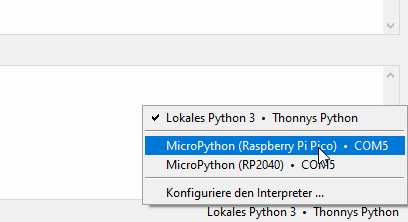
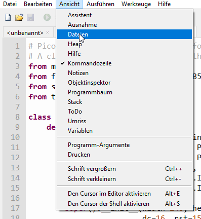
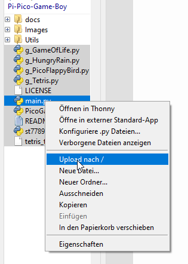

Programmierung
Für die korrekte Funktion muss nun der Microcontroller programmiert werden. Zunächst wird die aktuelle Firmware benötigt, diese kann hier heruntergeladen werden. Der Taster auf dem Microcontroller wird gedrückt gehalten, während dieser mit einem Micro-USB-Kabel an einen Computer angeschlossen wird. Der Computer erkennt den Microcontroller als Speichermedium, darauf muss die Firmware-Datei kopiert werden. Der Mikrocontroller trennt daraufhin automatisch die Verbindung zum Computer und startet sich neu.
Nun muss noch das Python-Programm für die Spiele auf den Microcontroller geladen werden. Dazu wird das Programm Thonny verwendet. Das Python-Programm kann hier als zip-Archiv heruntergeladen werden:
PicoGame-main.zipDieses Archiv wird an einem beliebigen Ort entpackt.
Zunächst muss in Thonny die Verbindung zum Mikrocontroller hergestellt werden. Dazu wird in der unteren rechten Ecke auf "Thonnys Python" geklickt und "MicroPython (Raspberry Pi Pico)" ausgewählt:
Jetzt kann in Thonny in den Ordner navigiert werden, in den zuvor das Programm entpackt wurde. Dazu wird der "Dateien"-Bereich am linken Rand des Fensters verwendet. Fehlt der Bereich, muss er zunächst unter "Ansicht" aktiviert werden.
Nun werden alle Dateien (aber keine Unterordner) in dem Ordner markiert und per Rechtsklick "Upload nach /" ausgewählt. Thonny lädt das Programm jetzt auf den Mikrocontroller hoch, sodass es beim nächsten Start ausgeführt wird.
